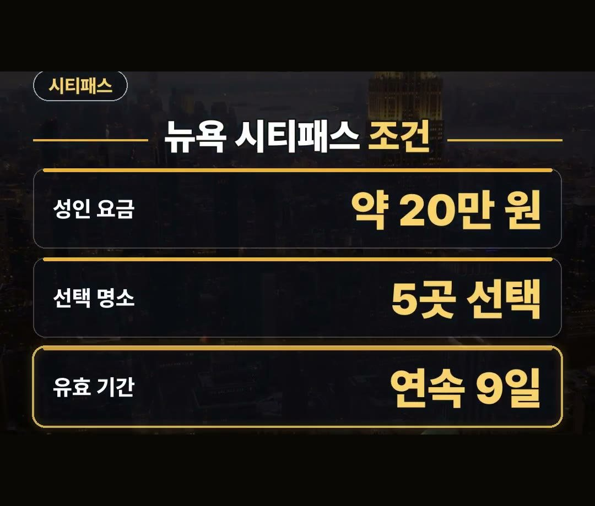

뉴욕 여행 패스 추천! 시티패스 C3 고시티 가격과 유효기간 비교
※ 이 글에는 제휴 링크가 포함되어 있으며, 링크를 통해 예약·구매하시면 일정 수수료를 받을 수 있습니다. (가격은 같습니다)
※ 이 포스팅은 쿠팡 파트너스 활동의 일환으로, 이에 따른 일정액의 수수료를 제공받습니다.
뉴욕 여행을 준비하면서 수많은 관광지 입장권을 각각 구매해야 할지, 아니면 패스를 이용해야 할지 고민되시죠?

2026년 10월 15일 공식 사이트 기준으로 뉴욕 패스는 종류에 따라 유효기간이 9일 또는 첫 방문부터 30일로 달라집니다.
본인의 뉴욕여행일정에 맞춰 명소 개수와 기간을 정확히 살펴보고 선택하는 것이 비용을 아끼는 지혜입니다. 💡
미국 뉴욕 여행을 계획할 때 방문할 주요 관광지 입장권을 하나씩 알아보는 것은 생각보다 복잡할 수 있습니다.
각 관광지마다 요금과 방문 요령이 다르고 일정 구성에 따라 들어가는 경비가 크게 차이 나기 때문입니다.
인기 명소 패스 3종 특징 살펴보기
뉴욕 여행 시 방문객들이 주로 고려하는 대표적인 패스로는 뉴욕 시티패스, 뉴욕 C3 패스, 그리고 고시티 익스플로러 패스가 있습니다.
이 패스들은 각기 선택할 수 있는 명소의 개수와 사용할 수 있는 유효기간이 달라서 본인의 여행 방식에 맞게 선택하는 것이 좋습니다.
2026년 10월 15일 공식 사이트 기준으로 인기 패스 세 가지를 살펴보고 일정에 맞춰 고르면 뉴욕 여행 비용을 아끼기에 유리합니다.
첫 방문부터 30일 동안 쓸 수 있는 패스도 있으므로 일정이 넉넉한 분들도 참고할 수 있습니다.
5곳 방문을 위한 뉴욕 시티패스 조건
여러 명소를 다채롭게 둘러보고 싶다면 뉴욕 시티패스가 있습니다.
주요 조건과 가격은 다음과 같이 형성되어 있습니다.
- 성인 요금: 149달러 (약 20만 원)
- 선택 명소: 5곳 선택
- 유효 기간: 9일

성인 149달러로 약 20만 원에 해당하는 뉴욕 시티패스는 명소 5곳을 선택하여 이용할 수 있는 구성입니다.
공식 사이트에 9일 동안 유효하다고 적혀 있으므로 일주일 안팎의 일정으로 뉴욕 여행을 즐기시는 분들에게 맞춰져 있습니다.
짧은 일정을 위한 뉴욕 C3 패스
방문하고 싶은 명소가 적거나 머무는 기간이 길지 않다면 뉴욕 C3 패스가 대안이 될 수 있습니다.
- 성인 요금: 109달러 (약 15만 원 · 13세 이상)
- 선택 명소: 3곳 선택
- 유효 기간: 9일
짧은 일정이라면 뉴욕 C3 패스가 성인 109달러로 약 15만 원입니다.
명소 3곳을 고르고, 이것도 9일 안에 쓰면 됩니다.
여유로운 뉴욕여행일정을 원할 때, 고시티 익스플로러
일정이 길거나 명소 방문 사이에 여유를 두고 싶다면 고시티 익스플로러 패스 5개 선택권을 고려해 볼 수 있습니다.
- 성인 요금: 179달러 (약 24만 원)
- 선택 명소: 5개 선택
- 유효 기간: 첫 방문부터 30일
고시티 익스플로러 패스 5개 선택권은 성인 179달러로 약 24만 원입니다.
첫 방문부터 30일 동안 쓸 수 있어 기간을 넉넉하게 잡고 이동하려는 분께 맞습니다.
참고로 뉴욕 여행 시 데이터는 공항에서 줄 서지 않고 이심으로 미리 준비할 수 있으며, 패스 요금은 바뀔 수 있으므로 예약 화면에서 직접 확인하는 것이 좋습니다.
정리
1. 2026년 10월 15일 공식 사이트 기준 뉴욕 시티패스는 성인 149달러(약 20만 원)로 명소 5곳을 9일 안에 이용합니다.
2. 뉴욕 C3 패스는 성인 109달러(약 15만 원)로 명소 3곳을 9일 안에 이용합니다.
3. 고시티 익스플로러 패스 5개 선택권은 성인 179달러(약 24만 원)로 첫 방문부터 30일 동안 쓸 수 있습니다.
최저가 예약 링크는 아래에 모아 두었어요.
지금 쓸 수 있는 여행사 할인
- 📶 해외 데이터는 이심으로 미리 · 마이리얼트립 마이심 「미국 50% 1,600원~」 · 2개 이상 추가 할인 (마이심 화면 표시 기준 · 10/5 확인 · 값은 바뀔 수 있음)
※ 여행사 사정으로 조건이 바뀌거나 일찍 끝날 수 있어요. 예약 전에 여행사 화면에서 한 번 더 확인하세요. (2026-10-05 확인)
📘 무료 여행 가이드 전자책 모음 보기 (오사카 · 후쿠오카 · 타이베이 · 도쿄) ›
📌 2026년 10월 기준 정보예요. 가격은 환율·시기에 따라 달라질 수 있어요.
· CityPASS 뉴욕 공식 (성인 149달러 · 9일)
· CityPASS 뉴욕 C3 공식 (13세 이상 109달러 · 9일)
· Go City 뉴욕 익스플로러 패스 공식 (5개 179달러 · 첫 방문부터 30일)
사진·영상영상 화면: Pexels (Ben Prater, Collis Torrington, Dark Astraal, Laura Tancredi, Sophia Zhang, Volkan Yılmaz)
사진: Pexels (Kévin et Laurianne Langlais, Andres Figueroa, Matteo Roman, Shreyas Sane)